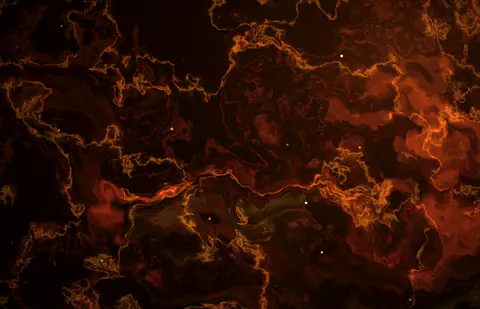
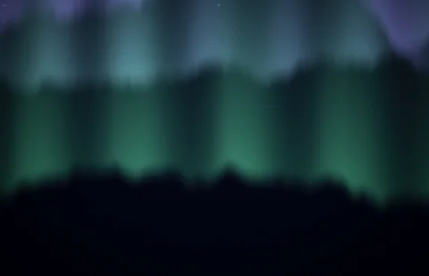
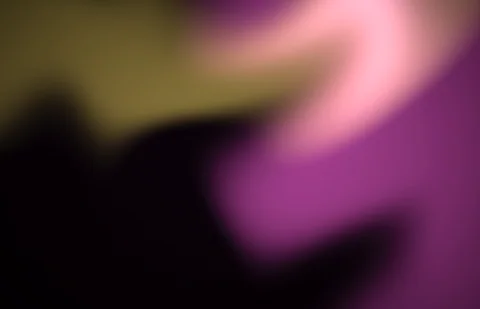
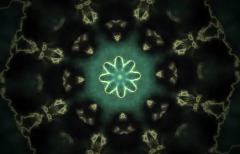

01 Windows · Android
Stickman
Notebook paper and ink, stick figures dancing to the beat.
A free music player for Windows and Android that turns any song into a whole vibe. Full songs, lyrics hitting word by word, and backgrounds that actually move with the music.
Synced lyrics, word by word, lined up to the exact recording that's playing. 19 animations from Spiral to Shatter, 13 font pairs, a karaoke mode with the voice turned down, and on Windows, Extreme lyrics that cut like a music video.




01 / 06They take their colours straight from the album cover. Low to Ultra, and Extreme on Windows.
Notebook paper and ink, stick figures dancing to the beat.

A comic book at night, a masked hero swinging through the city, POW and WHAM on the beat.

A blocky world at dusk to fly over, stone buttons, an XP bar.

An agent next to the lyrics, a round timer, ACE and CLUTCH banners.

A desert bomb site, smoke and tracers on the kick, the lyrics as a kill feed.

Real cars racing on real circuits in 3D, a rev counter round the play button.

NetherFlow is a HuCla build. The idea, the vision, how it should look and feel, that's me, Volodya.rua: every theme, every background, every build tested on my PC and my phone until it was right.
The code is mostly Claude, Anthropic's AI: the player, the lyric engine, the shaders (this page's background is one of them, running live), the 3D races, the Android app. Every commit Claude worked on says so.